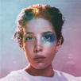
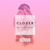

다음 프로그램  BEATS 1 ON AIR BEATS 1 ON AIR Paloma Mami talks female empower and her song Mami  BEATS 1 ON AIR BEATS 1 ON AIR Paloma Mami talks female empower and her song Mami BEATS 1 ON AIR BEATS 1 ON AIR Paloma Mami talks female empower and her song Mami BEATS 1 ON AIR BEATS 1 ON AIR Paloma Mami talks female empower and her song Mami BEATS 1 ON AIR BEATS 1 ON AIR Paloma Mami talks female empower and her song Mami